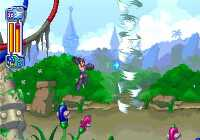

|

Review

Game Type: 2D Platform
Mega Man is called Rockman in Japan, but if you're reading this section
you probably already know that. The eighth adventure
for our besequeled hero appears exclusively (for now) on the Playstation.
The format is basically the same as in Mega Man 7; as you defeat each of
eight robot bosses you gain their weapons for your own use. For the first
time in any Mega Man game there are shooter-like sequences in a couple
stages.
Also includes FMV previews for Rockman - Battle and Chase, a racing
game similar to Mario Kart, and Super Adventure Rockman, a mix of FMV
cinemas and 3D crosshair shooting sequences (looks lame). As with the
Breath of Fire 3 preview in Street Fighter Zero 2 the previews will
probably be removed in the American version.
Gameplay: 90/100
Every Mega Man game has had solid play, but the eighth in the
series brings back something the more recent games have lacked -
originality. Most of the weapons have been seen in one form or another, but
the grappling beam, the fan that lets you levitate, and the exploding
soccer ball (that's right, you actually kick it) are more unique
than most other powerups in the series to date. Another nice new addition
is the ability to use your standard gun and a special weapon at the same
time. Powerups for your standard gun can be purchased in the shop, giving
you alternative shots when your gun is charged. You can swim now (press
jump again while jumping underwater). And the shooter-like sequences on
Rush Jet, complete with powerups, are definitely a first.
Graphics: 80/100
The character animation has been re-designed from MM7, and though he
doesn't look as good in still shots Mega Man is great in motion. Enemies
are smoothly animated as well. The flat backgrounds look decent but aren't
especially impressive. There are a few FMV cinemas with poorly animated
but skillfully drawn anime. Not a graphics breakthrough but colorful and
good-looking.
Sound: 90/100
The new music style is almost technoish but very unique and great to
listen to (the intro cinema music is extremely lame, however). Mega Man
and the bosses all have great voice samples but most are in Japanese; I'm
concerned about what will happen to them in the American translation.
Mega Man occasionally shouts when jumping, shooting, or taking a hit, but
not every time so it's not overdone. Pray Capcom doesn't hire the same
voice actors that dubbed the American cartoon series...
Overall: 90/100
An excellent game, even compared to the rest of its series.
Even with 14 stages it's over way too quickly, unfortunately, but the
replay value is excellent. It's still the same game you know and love, but
with enough new additions to make it worth the investment. If you're
impatient it's worth importing, since Sony is dragging their heels
approving it for American release.
|